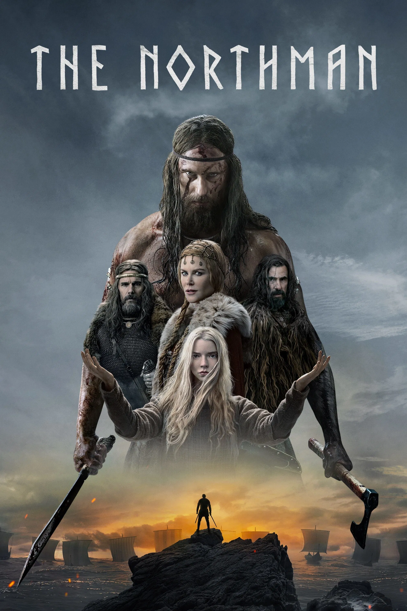

“I will avenge you, Father. I will save you, Mother. I will kill you, Fjölnir.”
The Northman is a tale of revenge set in the era of the Vikings. The film follows Amleth, a prince who witnesses the betrayal and killing of his father, King Aurvandill, by his uncle, Fjölnir. Fjölnir takes the throne and Amleth’s mother, Queen Gudrun, and Amleth vows to avenge his father, save his mother, and kill Fjölnir. Many years later, Amleth has grown into a hardened warrior. After learning of his uncle’s whereabouts, he disguises himself as a slave to infiltrate Fjölnir’s camp. On his journey, he meets Olga, a sorceress who shares his desire for vengeance, and with whom he falls in love. He later discovers that his mother may have been involved in the murder of his father. Learning the truth about his mother sends Amleth into a crisis, where he grapples with his sense of duty, and he is forced to choose between love and revenge. The story ends with a duel between Amleth and Fjölnir at the mouth of a volcano, completing the mission he has dedicated his life to.
The Northman (2022)
Directed by: Robert Eggers
Starring: Alexander Skarsgård (Amleth), Anya Taylor-Joy (Olga), Nicole Kidman (Queen Gudrún), Ethan Hawke (King Aurvandill), Claes Bang (Fjölnir)
Released by: Focus Features
